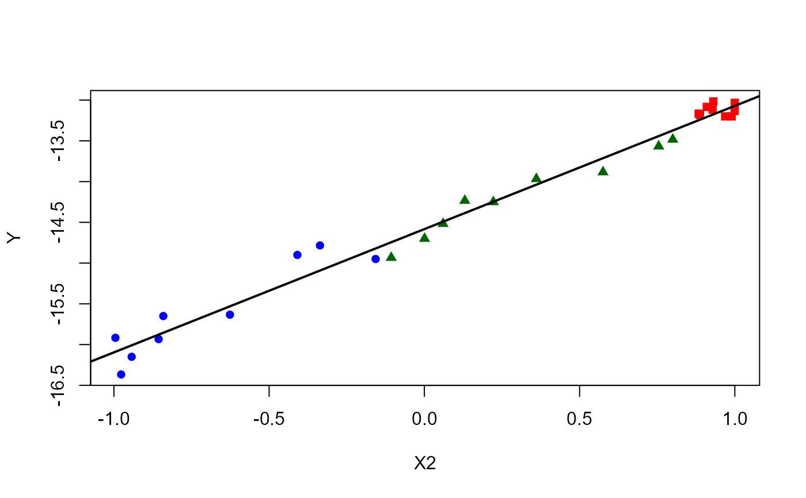
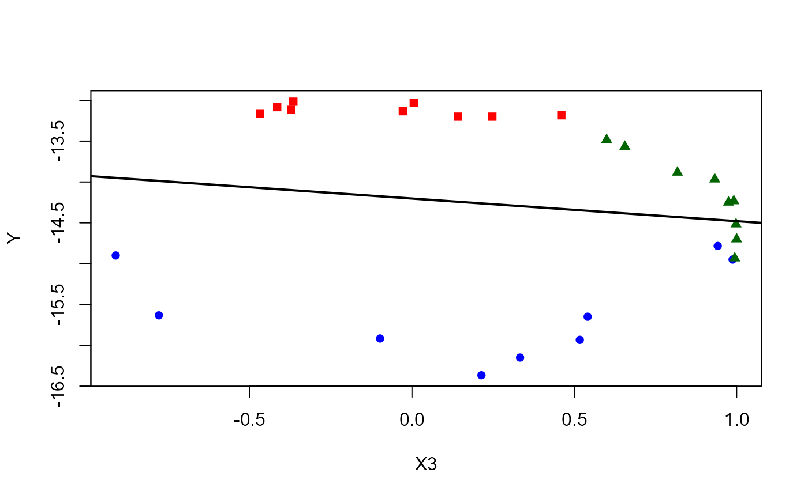

Mayer's Data on the Libration of the Moon.
Mayer.RdMayer had twenty-seven days' observations of Manilius and only three unknowns. The form of Mayer's problem is almost the same as that of Legendre, who developed later the least squares method.
"How did Mayer address his overdetermined system of equations? His approach was a simple and straightforward one, so simple and straightforward that a twentieth-century reader might arrive at the very mistaken opinion that the procedure was not remarkable at all. Mayer divided his equations into three groups of nine equations each, added each of the three groups separately, and solved the resulting three linear equations for \(\alpha\), \(\beta\) and \(\alpha sin\theta\) (and then solved for \(\theta\)). His choice of which equations belonged in which groups was based upon the coefficients of \(\alpha\) and \(\alpha sin \theta\). The first group consisted of the nine equations with the largest positive values for the coefficient of a, namely, equations 1,2, 3, 6, 9, 10, 11,12, and 27. The second group were those with the nine largest negative values for this coefficient: equations 8, 18, 19, 21, 22, 23, 24, 25, and 26. The remaining nine equations formed the third group, which he described as having the largest values for the coefficient of \(\alpha sin \theta\)."
Stigler (1986, p.21)
Usage
data(Mayer)Format
A data frame with 27 observations on the following 4 variables.
Equationan integer vector, id of the Equation
Ya numeric vector, representing the term \((h-90)\) (see details)
X1a numeric vector, representing \(\beta\)
X2a numeric vector, representing \(\alpha\)
X3a numeric vector, representing the term \(\alpha sin\theta\)
Groupa character vector, representing the Mayer grouping
Details
Stigler (1986):
"The development of the method of least squares was closely associated with three of the major scientific problems of the eighteenth century: (1) to determine and represent mathematically the motions of the moon; (2) to account for an apparently secular (that is, nonperiodic) inequality that had been observed in the motions of the planets Jupiter and Saturn; and (3) to determine the shape or figure of the earth. These problems all involved astronomical observations and the theory of gravitational attraction, and they all presented intellectual challenges that engaged the attention of many of the ablest mathematical scientists of the period.
Over the period from April 1748 to March 1749, Mayer made numerous observations of the positions of several prominent lunar features; and in his 1750 memoir he showed how these data could be used to determine various characteristics of the moon's orbit. His method of handling the data was novel, and it is well worth considering this method in detail, both for the light it sheds on his pioneering, if limited, understanding of the problem and because his approach was widely circulated in the major contemporary treatise on astronomy, having signal influence upon later work."
His analysis led to this equation:
$$\beta - (90-h) = \alpha sin(g-k) - \alpha sin\theta cos(g-k)$$
According to Stigler (1986, p. 21), this "equation would hold if no errors were present. The modern tendency would be to write, say":
$$(h - 90) = - \beta + \alpha sin (g - k) - \alpha sin\theta cos(g - k) + E$$
treating \((h - 90)\) as the dependent variable and \(-\beta\), \(\alpha\), and \(-\alpha sin \theta\) as the parameters in a linear regression model.
Source
Stigler, Stephen M. (1986). The History of Statistics: The Measurement of Uncertainty before 1900. Cambridge, MA: Harvard University Press, 1986, Table 1.1, p. 22.
Examples
library(sp)
library(effects)
data(Mayer)
# some scatterplots
plot(Y ~ X2, pch=(15:17)[as.factor(Group)],
col=c("red", "blue", "darkgreen")[as.factor(Group)], data=Mayer)
abline(lm(Y ~ X2, data=Mayer), lwd=2)

plot(Y ~ X3, pch=(15:17)[as.factor(Group)],
col=c("red", "blue", "darkgreen")[as.factor(Group)], data=Mayer)
abline(lm(Y ~ X3, data=Mayer), lwd=2)

fit <- lm(Y ~ X2 + X3, data=Mayer)
plot(predictorEffects(fit, residuals=TRUE))
Avg_Method <- aggregate(Mayer[, 2:5], by = list(Group = Mayer$Group), FUN=sum)
fit_Mayer <- lm(Y ~ X1 + X2 + X3 - 1, Avg_Method)
## See Stigler (1986, p. 23)
## W means that the angle found is negative.
coeffs <- coef(fit_Mayer)
(alpha <- dd2dms(coeffs[2]))
#> [1] 1d29'44.896"E
(beta <- dd2dms(coeffs[1]))
#> [1] 14d32'49.896"E
(theta <- dd2dms(asin(coeffs[3]/coeffs[2])*180/pi))
#> [1] 3d49'6.324"W